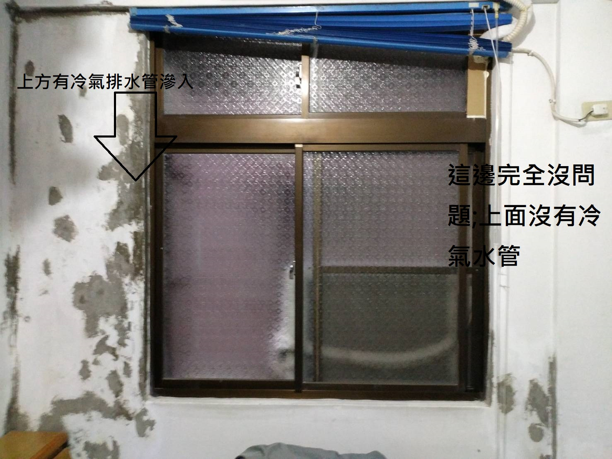

3樓的2間房間發霉
您好,我們3樓靠後面的2間房間牆壁長期發霉,已經好幾年了;內牆已使用水性/油性油漆跟防霉產品處理過好幾次,一直無法解決.
我們前幾天拆了一台冷氣, 發現發霉的狀況, 可能跟您們的2間房間冷氣排水管的水流滲水有關.
我們的內牆, 已經再處理過了; 因為房子已經30年了, 我們發現, 外牆很多磁磚因為地震, 已有裂縫; 水流很容易滲進牆壁中.
我們右邊房間的冷氣水管, 直接斜拉到跟另一個陽台洗衣機排水一樣的出水口; 完全不會影響到2樓的房間.
打開窗戶可以看到, 我們後門的鄰居們, 多直接拉PCV管, 將冷氣出水排放; 這樣不會滴水, 樓下鄰居也不會有滲水的困擾.

左圖:左側房間, 受到2根水管長期滲水, 左右側牆壁皆有壁癌
右圖:右側房間, 右測受到1根左側水管長期滲水, 左側牆壁有壁癌; 但是右側牆壁上方位有水管, 壁癌非常少, 很容易處理
建議處理方式:
您們的右側房間, 跟我們一樣, 將冷氣水管斜拉到另一個陽台洗衣機排水一樣的出水口
您們的左側房間, 買一條小的PVC 水管, 利用該PVC管子排水, 並將該水管跟上方下來的大PVC水管綁在一起
非常感謝您!!
電話 : 02-2260-4955